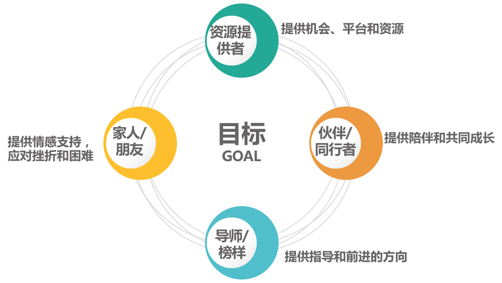
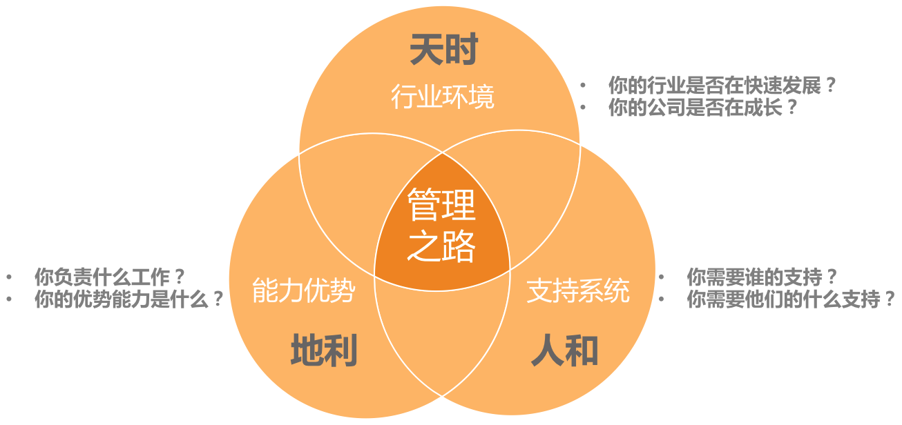

- 00 开篇词 你为什么需要学管理？.md
- 01 多年前的那些工程师都去哪了？.md
- 02 我要不要做管理呢？内心好纠结！.md
- 03 哪些人比较容易走上管理岗位？.md
- 04 我要不要转回去做技术呢？.md
- 05 作为技术管理者，我如何保持技术判断力？.md
- 06 我这样的风格能做管理吗？.md
- 07 我能做好管理吗，大家服我吗？.md
- 08 管理到底都做哪些事儿？.md
- 09 从工程师到管理者，角色都发生了哪些变化？.md
- 10 新经理常踩的坑儿有哪些？.md
- 11 我刚开始带团队，从哪里着手呢？.md
- 12 如何界定我团队是干什么的呢？.md
- 13 如何为团队设定合理的目标呢？.md
- 14 如何来规划团队的组织结构呢？.md
- 15 我都要申请哪些资源呢？.md
- 16 团队建设该从哪里入手？.md
- 17 如何提升员工的个人能力？.md
- 18 如何提升员工的工作意愿和积极性？.md
- 19 如何兼顾团队分工的稳定性和灵活性？.md
- 20 有什么方法可以有效提升团队凝聚力吗？.md
- 21 如何物色和培养核心人才？.md
- 22 如何建设团队文化，营造团队氛围？.md
- 23 如何和低绩效员工谈绩效？.md
- 24 如何让团建活动不再“收效甚微”？.md
- 25 多任务并行该如何应对？.md
- 26 如何确保项目的有效执行？.md
- 27 如何让流程机制得到有效的执行？.md
- 28 管理沟通那些事儿.md
- 29 沟通经常鸡同鸭讲，说不到一块怎么办？.md
- 30 如何掌控自己的情绪，以及如何管理情绪化的员工？.md
- 31 我各方面做得都很好，就是做不好向上沟通.md
- 32 横向沟通和非职权影响力.md
- 33 向下沟通的常见实例解析.md
- 34 管理沟通上有哪些常见的坑儿呢？.md
- 35 从空降谈管理方法论的积累.md
- 36 走出自己的管理之路.md
03 哪些人比较容易走上管理岗位？
也许你早就决定做一名管理者，又或者你刚刚有这个打算，不管哪种情况，你是否已经和你的上级交流过这个问题呢？在我调研过的几百位新经理中，只有百分之十几的比例和上级表达过管理意愿，而我自己培养的几十位新经理中，明确表示自己想做管理的，大约只有 20% 左右，这个比例很低。虽然我可能没法立刻满足他们，但在有合适岗位的时候，我的确会优先考虑他们，因为对于做管理来说，个人意愿很重要。
不过，一个有意思的情况是，最顺利走上管理岗位的，却不一定是这些诉求最明确、准备最超前、表白最早的 20%。这是为什么呢？在做咨询的时候，我也常常会收到类似的困惑。比如：
“团队里我的资历最老，对业务最熟悉，为什么上级提拔的不是我？”
“我是上级最倚重、最信任的一个，经常受到表扬，为什么上级选他做 leader 呢？”
“我一直想做管理，但是团队里没有管理的坑儿了，要不要换个工作？”
……
上面这些人没有被第一时间提拔，是做管理的天资不够吗？显然不是。这引发一个值得思考的问题：到底什么样的人更容易走上管理岗位呢？
下面我们一起来聊聊。
中国古人有大智慧，对于促成一件事所需要的外部因素，他们把它概括为“天时地利人和”。什么？你认为谈论做管理，扯上“天时地利人和”太虚无缥缈？别急，先让我说完。
一、“天时”
做管理的“天时”，其实就是机会、时机、大环境、时代背景。
经常有人跟我抒发内心的郁闷，“我一起毕业的大学同学，很多都已经做管理了，职位和薪水都比我高，当时他们学习并不比我强，blah，blah”，不甘心和不理解溢于言表，感觉自己受到了不公平待遇。而我想说的是，毕业的时候你选择了什么样的行业和企业，就决定了什么样的机会和可能。
十几年前，我很多优秀的研究生同学，毕业后去了微软、IBM、摩托罗拉等世界顶级公司，或者因为户口去了一些国企和事业单位，去互联网公司并不是大家的首选。
但近十几年变化最大、发展最快的反而是互联网行业，反而是那些在互联网行业的同学，随着行业和企业的快速发展，能力和职位都提升特别快，不少同学已经成为中大型公司的高管，带着几百人、上千人的团队，远远超过了在外企和国企同学的发展速度。
当然，我这里并没有去探讨成功或失败的问题，在外企和国企的同学如果拿到了他们当初想要的，他们一样也是很成功的。
我只是想说，如果你要做管理，最好选择那些发展快的行业和公司，这意味着更多的机会。当然更多的机会也意味着更多的挑战，如果你希望工作得舒服轻松一些，依然可以去稳定的行业和企业工作，但在稳定的行业要走上管理岗位，可能就需要漫长的等待了。
那么，是不是变化越快就越适合做管理呢？
相信经常有人对你说，去创业公司吧，小公司机会多，锻炼的能力也更加全面。如果你是因为其他原因去初创公司，我不做评判；但如果你的初衷是想做管理，那我可以明确告诉你，天使轮、A 轮这样的早期公司，大多处于生存期，还没有上规模，而没有规模的公司并不需要你去做管理，所以你很大概率会失望。
而且，管理是需要长期积累的。百度曾经有个不成文的规定，技术岗位最优秀的员工可以半年晋升，但管理岗必须在当前职位干满一年才能晋升，可见对实战经验的积累是多么重视。对于初创公司来说，能否再活一年都不好说，更别提让你稳定积累了。而你如果频繁更换公司，对管理能力的提升则更为不利。
所以，去能积累的公司做管理，会是更合理的选择。
另外，还有一些机会是偶然的。比如我团队一个同事的外语特别好，在搭建国际化团队的时候，他就被选中作为负责人；还有另外一个同事，因为他有机器学习背景，在新组建一个策略团队的时候，他就顺理成章成为了该团队的 leader。
这些以自身独特优势为前提的因素，虽然看起来更像是“地利”，但其实更加受限于时机。所以我想告诉你，一个人走上管理岗位有很多“机缘”，你可以审视一下，你所在的公司和团队可能产生出哪些新的机会。
当然，这里我并不是鼓励大家跳槽时只去选“天时”，因为除了关注“天时”之外，“地利”和“人和”也很重要，需要综合评估。
二、“地利”
做管理的“地利”，就是你的优势、能力，以及你所负责的工作内容。
所谓优势，都是基于特定的工作内容和工作任务而言的，抛开具体工作场景泛泛地谈优势和能力没有意义。那么对于技术人来说，从事什么样的工作内容，以及具有哪些能力和优势对走上管理岗位有帮助呢？
你可能会说，大家都是写代码的，要说技术能力对晋升有影响很容易理解，工作内容还能影响晋升？我想说，是的，而且很有影响。我十年来带技术团队的经历中，发现负责如下这些工作内容的工程师，更容易成为管理者：
第一类是负责最全局的模块，核心是“广”。
每一个团队的业务，都会分成很多模块，总会有那么几个模块是事关全局的，也是跟大家关联最多的，比如提供所有的服务接口、做所有的数据组装和呈现、产品功能的实现等等。
这样的工作内容，使得负责的工程师很快锻炼出全局的视野、积极的沟通协调能力，并和很多人建立起合作关系。做得好的话，很快就可以成为一个团队的工作核心。
因此，很多技术人是这样走上管理岗位的，他们往往管理成熟度也高，成功的概率很大。
第二类是负责最核心的技术模块，核心是“深”。
这个就容易理解了，掌握着团队最核心、最重要、最有技术含量、最能体现团队价值的模块的工程师，是团队里的骨干，不可或缺的技术核心，容易得到上级重视去承担重任。他们往往影响力比较大，所以容易走上管理岗位，不过常常是被动的。
有一点需要注意的是，这类工程师即便能走上管理岗位，很多管理的意识和能力还是需要修炼的，因为他不像第一类天然就有锻炼全局视野和管理技能的机会。但无论如何，他们也是容易脱颖而出的。
所以你看，负责的工作内容是否全局和关键，是会影响你能多快地走上管理之路的。
你可能会有疑问：“我没有负责这样的模块，是不是就没有机会了呢？”当然不是。如果你主动去了解技术和业务的全局，并主动争取做一些大型项目的负责人，你就具备了做管理的“地利”，前提是你先认识到这一点。
三、“人和”
做管理的“人和”，就是你能否得到他人的支持。
那么，要得到哪些人的哪些支持呢？一般来说，你需要四类支持：

管理者的支持系统——“人和”
第一类，为你提供机会、平台和资源的支持。一般是你的上级，他们是否支持你做管理非常重要。
第二类，为你提供陪伴和共同成长的支持。一般是和你平级的管理者，尤其是那些你愿意与之持续交流、切磋管理问题的伙伴。当然也可以是之前的同学和朋友，还可以是一些管理社群。总之，你可以根据自己的情况和喜好来看看，谁可以做你的管理伙伴。
第三类，为你提供指导和前进的方向。一般是你的导师、指导人、管理教练或上级。你可以设定你认可的管理榜样，多和他交流，多听听他的看法和意见，这会让你的管理之路顺畅很多。
第四类，为你提供情感支持，让你勇于面对困难和挫折，在管理之路上走得更远。一般来说，你的家人和朋友，可以担当这样的角色。
盘点以上四类人，并寻求他们的支持，尤其是稳定的支持，就构成了你做管理的“支持系统”，满足了你的“人和”。
这样，“天时”“地利”“人和”这三类外部因素都具备了（如下图），你自然可以更顺利地走上管理岗位。

管理之路的外部因素
但你也许会问：“天时、地利、人和，我都不具备，我是不是就不能做管理了呢？”
淡定，我们这篇文章探讨的是：什么样的人容易走上管理岗位，我可从来没有说过不具备这些条件就做不了管理了啊。你不信的话，我跟你说说我是怎么开始做管理的。
十年前，我是一名普通的服务端工程师，但我做工程师的时候，就认定自己要成为一名管理者的。我的上级是一位刚刚晋升的经理，而我们团队只有 5 个人，显然不需要第二个经理，于是，我晋升经理这事看起来是没有机会的。
更令人绝望的是，我们的部门经理认定我不适合做管理，他认为我是一位很典型的工程师，因为我曾经连续获得部门的“最佳质量工程师”的称号，似乎写高质量代码才是我的优势。于是，做管理的“天时”“地利”“人和”，我一样都没有，我是不是该死了这条心呢？
事实是，我并没有在意这些情况，我依然会在编码工作之余，去关心项目的流程该怎么改进，团队合作的机制该怎么建立，新员工入职该怎么培养，团队的氛围该怎么建设……虽然我之前并没做过这些工作，上级也不会因此就给我多发薪水。
但是我还是用心去做了，而且越做越拿手，团队里的同事和上级经理也慢慢认可了我的贡献和价值，部门经理也扭转了对我的看法，于是他把我的直接经理调去负责更大更有挑战的业务，提拔我来负责我们团队。从此，开启了我的十年管理之路。
所以你看，想被提拔为一个管理者最好的方式，就是你首先成为一个实际上的管理者，我们常常把这样的晋升理念叫“既定事实”，而这种理念在互联网行业里被广泛认同。
所以，在审视你的“天时地利人和”之余，你准备好先成为一个实际上的管理者了吗？
© 2019 - 2023 Liangliang Lee. Powered by gin and hexo-theme-book.